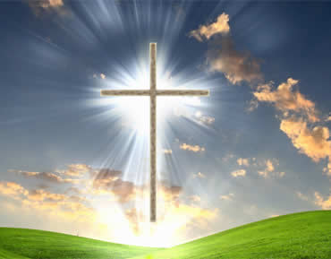

What We Believe
Humanity
In this church, humanity is celebrated as a diverse, God-breathed tapestry, woven with love and compassion. We recognize our shared dignity, journey together through life's triumphs and struggles, and stand as a beacon of hope in a challenging world, striving to build a future where all shine with God's grace
Prayer
Prayer, in this church, isn't just a whisper in the dark; it's a vibrant dialogue, a chorus of voices rising together. We believe prayer isn't just for personal solace, but a powerful bridge connecting us to God and one another. In shared petitions and joyful thanksgivings, we weave a net of support, lifting each other and the world towards a brighter dawn. Here, prayer is an open door, welcoming all who seek connection, comfort, and the transformative power of faith.

Salvation
Salvation, in this church, isn't a destination on a map, but a transformative journey. Imagine a seed, nestled in the earth, yearning for sunlight. Through faith and surrender, we open ourselves like fertile ground, receiving the nurturing grace of God. As we grow, roots of strength and resilience pierce the darkness, drawing nourishment from the well of hope. Tender shoots of love and forgiveness unfurl, reaching towards the light. Gradually, the seed transforms into a magnificent tree, standing tall against life's storms, offering its shade and fruit to others. This is the essence of salvation – a continuous process of becoming more fully who God created us to be, bearers of His love and light in the world.
Grace
Grace, in this church, isn't a fragile butterfly fluttering precariously, but a boundless ocean, surging with the unwavering love of God. It's the sun that pierces through cracks in our armor, warming us from within. It's the hand that lifts us when we stumble, the whisper that soothes our fears, the light that guides us through darkness. Grace isn't earned; it's a gift, a sweet rain that falls upon the righteous and the sinner alike. It washes away our blemishes, revealing the divine spark within each of us. It fills the emptiness, mends the broken, and grants us the strength to rise again, stronger and kinder, with hearts overflowing with the gratitude of being loved unconditionally. This grace isn't a fleeting feeling; it's the bedrock of our faith, the compass that points us towards our true north. It's the fuel that ignites our compassion, urging us to extend the same unmerited love to others, weaving a tapestry of forgiveness and acceptance that reaches beyond the boundaries of our own lives.
-
1
We believe the Scriptures, both Old and New Testaments, to be the inspired Word of God without error in the original writings, the complete revelation of His will for the salvation of man and the divine and final authority for Christian faith, life and conduct. -
2
We believe in One God, Creator of all things infinitely perfect and eternally existing in three persons; Father, Son and Holy Spirit. -
3
We believe in Jesus Christ, without any change in His eternal Deity, became a man through conception by the Holy Spirit and virgin birth, that He died on the cross, a perfect and compete sacrifice, in our stead and for our sings according to the Scriptures. He rose bodily from the dead and ascended into Heaven where at the right hand of the Majesty on High (God Almighty), He is now our High Priest and Advocate. -
4
We believe that the ministry of the Holy Spirit is to glorify the Lord Jesus Christ, and during this age, to convict of sing and regenerate the sinner upon believing in Christ, at the time of regeneration baptising the believer into the only Body of which Christ and to indwell, guide, fill and empower the believer for godly living and service
Life Group
add groups